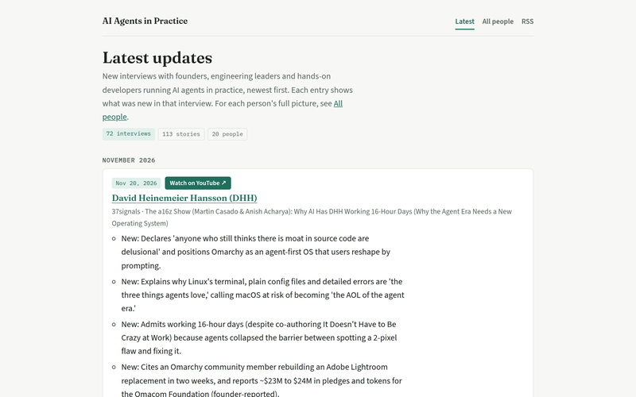
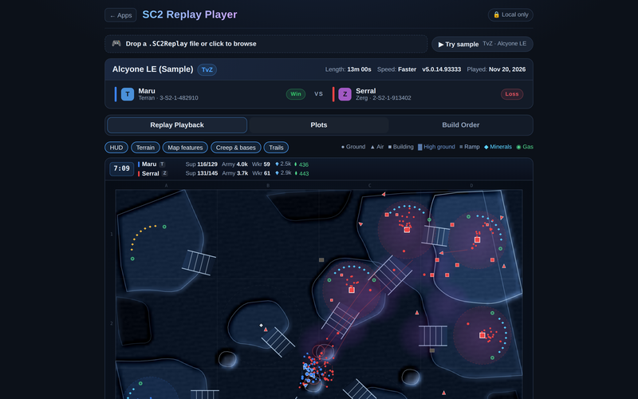
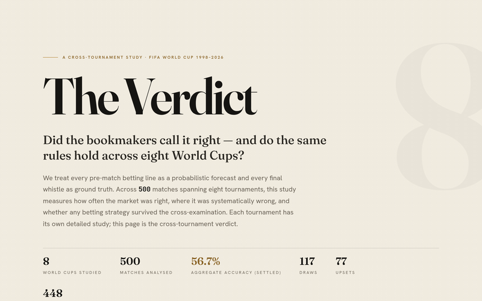
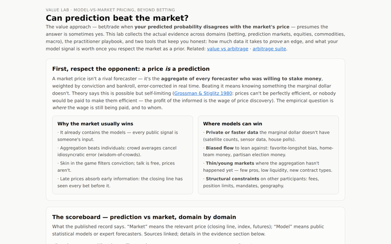
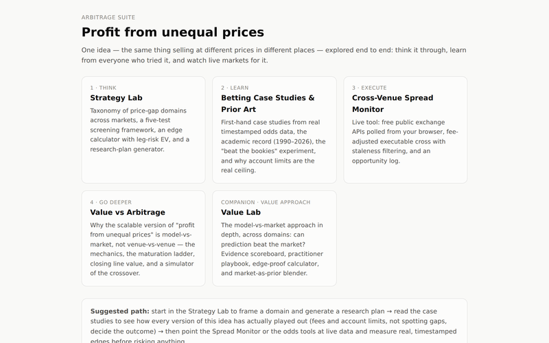
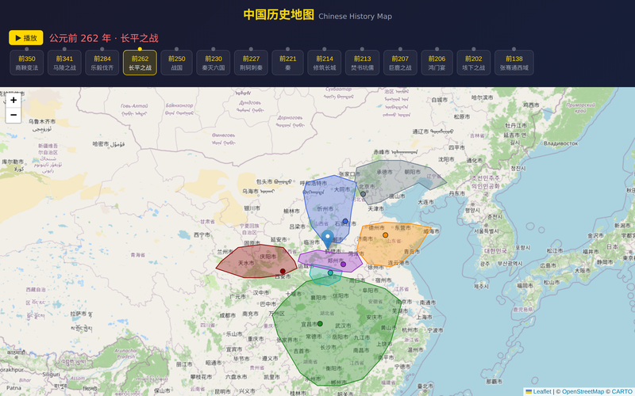

AI Agents in Practice
Real stories of AI agents solving problems, shipping features and moving metrics, from 20 founders, engineering leaders and hands-on developers (DHH/37signals, Simon Willison, Mitchell Hashimoto, Peter Steinberger, Armin Ronacher, Steve Yegge, Shopify, Vercel, Anthropic, OpenAI, Ramp and more), with each person's 2026 interviews combined into one page: what they do and what they learned.

StarCraft II Replay Player
Drop a .SC2Replay file for a match summary, an analytics dashboard (supply, income, army-value and worker graphs plus per-player build orders), and 2D minimap playback with a scrubber. Decoded entirely in your browser (Pyodide + vendored s2protocol/mpyq); nothing is uploaded.

The Verdict — World Cup Odds Accuracy, 1998–2026
Did the bookmakers call it right — and do the same rules hold across eight World Cups? A cross-tournament study of 496 matches: how accurately pre-match odds predicted outcomes, where the favourite-longshot bias inverts (−3.1% in 2010 to +15.2% in 2006), and which betting strategies survived all seven settled tournaments. Eight standalone studies under one comparative roof.

Value Lab
Can prediction beat the market? The evidence across betting, prediction markets, equities and commodities, the practitioner playbook (closing line value, Kelly, market-as-prior), and tools for proving an edge is skill rather than luck.

Arbitrage Suite
Profit from unequal prices, end to end: a strategy lab (taxonomy, screening framework, edge calculator, plan generator), betting-market case studies with the full published record, and a live cross-venue spread monitor on free public APIs.
光影与救赎 · 基督徒影评辑录
A curated anthology of Christian film criticism in Chinese — film readings by 王书亚（王怡）, 石衡潭, 刘小枫, and 齐宏伟, each with an original paraphrased summary, a typographic poster card, and a link to the source essay.
华夏历代征战图录 · Dynastic Battle Atlas
A unified portal to thirteen same-style interactive campaign atlases spanning Chinese history — Spring & Autumn / Warring States, Qin–Chu, Han, Three Kingdoms, Western Jin, Eastern Jin, Northern & Southern Dynasties, Tang, Five Dynasties & Ten Kingdoms, Song, Mongol-Yuan, Ming, and Qing (214 battles across 13 eras, 春秋 to 清).

Chinese Historical Map
Interactive timeline-based visualization of Chinese dynasties and kingdoms with detailed historical information, key events, and notable figures.